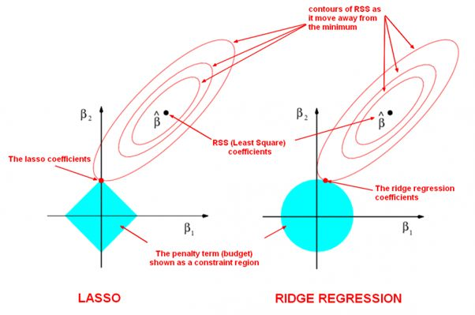

Machine Learning - Regularization
Adding the right amount of bias to a model can help make more accurate predictions by desensitizing it to some of the noise in the training data.
Take linear regression as an example.
LASSO (Least Absolute Shrinkage and Selection Operator)
Feature selection
It has the property that if $\lambda$ is sufficiently large, some of the coefficients $w_j$ are driven to zero, leading to a sparse model in which the corresponding basis functions play no role. To see this, we first note that minimizing the above loss function is equivalent to minimizing the unregularized sum-of-squares error
subject to the constraint
for an appropriate value of the parameter $\eta$. The origin of the sparsity can be seen from the figure below:

which shows that the minimum of the error function, subject to the constraint. As $\lambda$ is increased, so an increasing number of parameters are driven to zero.
Ridge Regression
Closed form solution
OLS solution:
with the quadratic penalty term, the coefficient vector becomes
Another advantage of ridge regression over OLS is when the features are highly correlated with each other, then the rank of matrix $\Phi$ will be less than $P+1$ (where P is number of regressors). So, the inverse of $\Phi^\top \Phi$ doesn’t exist, which results to OLS estimate may not be unique.